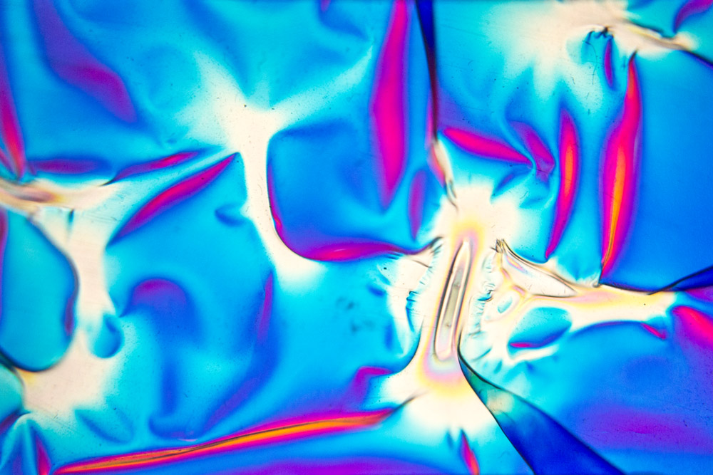
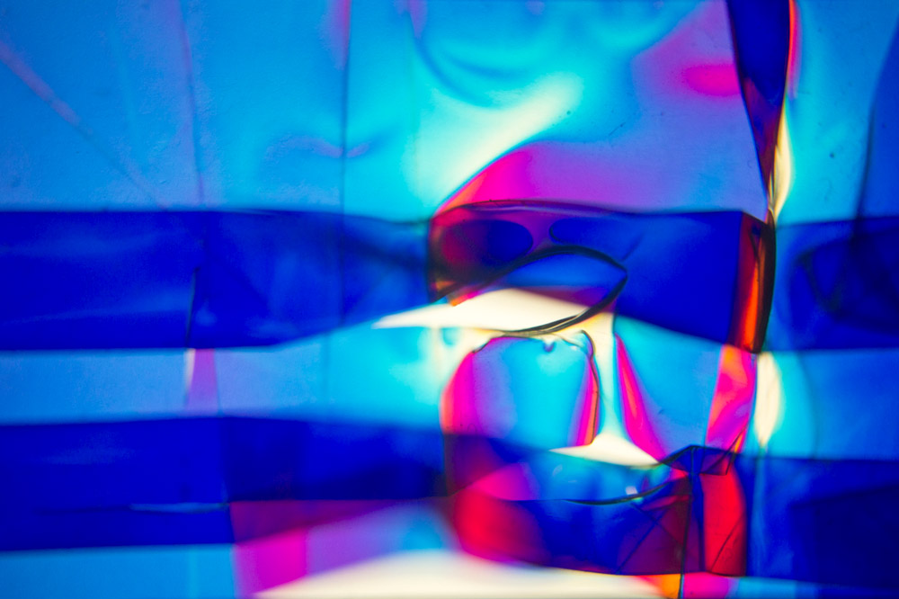

Februar 2024 - Karlsruhe
TRUTH DEFENDER @ Global Game Jam: "Make Me Laugh"
TRUTH DEFENDER is the 1 and only tickle puzzle.
Andrew is a Beamter at MKF,
he likes to do riddles, puzzles & Meth.
At work he's facing a horrible gangster,
to find the truth is his duty, as a true 'truth defender'...
by Eric Wehner & Eike Buff
GGJ 2024, HfG Karlsruhe
Die Windows Version gibts hier zum Download!
{kind=link}
{kind=link}
{kind=link}
Juli 2023 - Osterode am Harz
Trickfilm mit Kids IV
Kindertrickfilm Ferien(s)pass präsentiert: "Die Horror WG" und "Warum man keine Schweine isst", die beiden diesjährigen Blockbuster-Ergebnisse des Osteroder Ferienprogramms. Gratuliere und bis nächstes Jahr!
Februar 2023 - Köln
Vollgas Musikvideo
Inspiriert vom tschechischen Animationsfilmer Jan Švankmajer, hab ich Ende letzten Jahres ein Musikvideo für das kölner PHALANX Quartet produziert. Die Filmaufnahmen sind im September '22 im LOFT Köln entstanden.
Vielen Dank für den Raum und die Unterstützung!
August 2022 - Osterode am Harz
Trickfilm mit Kids III
Hier gibts wieder mal lustige Ergebnisse des Ferienpass Trickfilm Workshops zu sehen: "Umweg durch den Ozean", "Das Monsterschloss" und "Gefahr im Tierpark". Toll gemacht! Bis nächstes Jahr :)
Dezember 2021 - Karlsruhe
Kannst du mich hören?
Neuerdings leite ich den Medienclub des WERKRAUM: Karlsruhe e.V.. Ende des letzten Jahres haben wir uns über verschiedensten mediale Themen Gedanken gemacht, wie beispielsweise Binchwatching, Clickbait und Adfunding. Außerdem recherchierten wir zur Geschichte des Alten Schlachthofs und den Personen, die ihn mittlerweile bevölkern. Zu siebt haben wir daraus ein Mapping entwickelt, das einen Wassertank in ein Smartphone verwandelt. Um das ganze abzuschließen, haben wir am 20. und 21. Dezember ein kleines Event veranstaltet, bei dem das Mapping gezeigt und besprochen wurde.
Flyer: Eike Buff
Fotos: Bernd Hentschel
{kind=link}
{kind=link}
{kind=link}
April 2021 - Karlsruhe
Das Hässliche Universum
Fünf Charaktere sind Teil einer Bewegung der Unzufriedenen, die die eigene Machtlosigkeit im kapitalistischen Wachstumsprojekt überwinden möchten. Umweltzerstörung, Herrschaft der Konzerne, Impotenz der Politik – das alles raubt ihnen den Schlaf. Als auf ihrem Horizont Rosa, eine visionäre Figur auftaucht, zündet die globale Anhängerschaft die Zivilisation an. Ist aber ein Neubeginn überhaupt möglich? Führt uns die Unerträglichkeit des Bestehendem zur Katastrophe oder Erneuerung?
Diese Videodokumentation sortiert alle Bausteine einer Inszenierung, die im WS 20/21 an der HfG Karlsruhe entstand. Ein zweiwöchiger Prequel erzählt die Geschichte der verschiedener Charaktere und mündet in einem Beerdigungs-Spaziergang am Sonntagsplatz. Einen ausführlicheren Text dazu findet man auch auf der Projekt Website unseres Fachbereiches ADSZ.
Februar 2021 - Karlsruhe
TechUnpack die Erste
Im HfG-Seminar 94,3% bei Ivan Weiss und Michael Kryenbühl entstand dieses fiktive Unpacking Video. Es ging im Seminar um die Trendthemen AI und Speculative Design. Ich hab mich letztlich für die Kombination von Smart Home und Ad-Funding interessiert: Was passiert wohl, wenn die vermeintlich cleveren Heimassistenten auf einmal werbefinanziert und dadurch kostenlos erhältlich werden? Ohweia!
August 2020 - Osterode am Harz
Trickfilm mit Kids II
Ein Tankstellenraub, Avengers Teil II und das Zombiehotel - Die zweite Trickfilm Ferienaktion im Harz hat wieder crazy Ergebnisse hervorgebracht. Danke an die Kids, Danke an Zainab und Lukas! Bis nächstes Mal <3
April 2020 - Bremen
Autofokus & Holofolie
Anfang des Jahres hab ich mich mit dem Autofokus eines alten Diaprojektors vergnügt. Dabei entstand eine Serie an Bildern, durch die uns eine endlose Fokusfahrt führt. Dies sind nur einige der Muster, die ich mit verformter Hologram-Folie erzeugt habe.
 {kind=link}
{kind=link}
{kind=link}
Oktober 2019 - Bremen
Projektion für Siddhartha
Im Sommer durfte ich eine Produktion am Figurentheater Mensch, Puppe! begleiten und zu Philip Stemanns Fassung von Siddhartha (Hermann Hesse, 1922) eine Projektion gestalten. Neben stimmungsvollen Stills, haben auch verschiedene Animationen ihren Platz gefunden. Und da das Theater bisher wenig Umgang mit Projektoren hatte, fielen auch die Beschaffung, Verkleidung und Installation eines geeigneten Projektors in meine Verantwortung.
Anschauen könnt ihr das Stück noch bis mindestens Mai 2020. Eine Video-Dokumentation ist leider noch nicht online!
Fotos: Jürgen Lier
{kind=link}

August 2019 - Osterode am Harz
Trickfilm Aktion im Sommer
Dies sind die Ergebnisse des Trickfilm Workshops, welcher im Rahmen des Ferienpasses in Osterode am Harz stattfand. Insgesamt 12 Kinder im Alter zwischen 9 und 13 Jahren haben an drei Tagen Trickfilme gedreht. Danke an die anderen Betreuer Zainab, Jonas, Lukas, sowie alle Kids! Großartige Arbeit!
April 2019 - Kassel
Mitarbeit am Finsterwald
In Zusammenarbeit zwischen Urbanscreen und der Grimmwelt in Kassel entstand Finsterwald, ein audiovisuelles Raumkonzept zum Thema Märchen. Mittlerweile gibt es sowohl Video Dokumentationen von beiden Produktionspartnern, als auch ein Making-Of im YouTube Channel der Grimmwelt (zweites Video).
Während der Produktion übernahm ich jegliches 2D-Compositing, sowie Teile der medientechnischen Planung und deren Umsetzung später beim Ausstellungsaufbau in Kassel.
Foto: Urbanscreen
{kind=link}
August 2018 - Weimar
INSIDE OUT - Konzept einer Medienfassade
Mit dem Alias "5Elements" haben vier Freunde und ich uns beim diesjährigen Genius Loci Festival beworben. Dabei haben wir ein Medienfassaden-Konzept für die Bibliothek der Bauhaus Universität in Weimar entwickelt und am Festivalwochenende präsentieren können.
Da Medienfassaden in der Regel permanente Installationen sind, wir jedoch auf die Zeit des Festivals beschränkt waren, wurde das Konzept per Projektion auf die Fassade gebracht und dadurch LED-Stripes und -Meshes simuliert.
Suchanfragen an die Datenbänke der Bibliothek lösen die algorithmische Rekombination vorhandener Buchtitel aus. Das Produkt dieser Rekombination sind immer neue, fiktive Buchtitel. Das Gebäude, in seiner recht abgeschlossenen Form, trägt seine inspirierende Kraft so auf poetische Weise nach außen.
November 2017 - Bremen
Roots'n'Visions Doku
VAJA - Verein für akzeptierende Jugendarbeit - sowie Urbanscreen initiierten 2017 den zweiteiligen Workshop "Roots'n'Visions". Ein Projekt für junge Menschen aller Kulturen, mit den Fragen nach Wurzeln und Träumen. Am Ende der insgesamt nur 4 Wochen Workshopzeit stand diese 11-minütige Projektion auf das Goethe-Theater am Eingang des Bremer Viertels. Ich durfte die Konzeption und Realisation (Dramaturgie, Schnitt, Grading und Ton) der Dokumentation dieses wirklich coolen Projektes übernehmen.
Juli 2017 - Bremen
Br3minale
Während der Breminale 2017 habe ich zusammen mit Ana Romaõ für die Projektion auf der Dreimeterbretter-Bühne sorgen dürfen. Dem Grundgedanken der Bühne treu, galt es mit möglichst geringem Budget für stimmungsvolle Partys zu sorgen.
Mai 2017 - Krakau, Polen
SMALL TALKS
Im Rahmen meines Praktikums bei Urbanscreen kam ich erstmalig mit Projection-Mapping und digitaler Animation in Berührung. "SMALL TALKS" wurde anlässlich des 50. Jubiläums des Goethe Instituts in Krakau produziert und erzählt eine Geschichte von Kommunikation auf grafischer Ebene. Kreis und Dreieck lernen sich kennen, entwickeln eine gemeinsame Sprache und kommen in einer Party ähnlichen Szene zu einem ihrer Bekanntschafts-Höhepunkte. Mit einem Mix aus Processing und After Effects animierte ich diesen Konfetti-Wusel.

Dezember 2016 - Santiago de Chile, Chile
EXPO Amalgama
Bei dem Foto- und Videokunstevent EXPO Amalgama in der Hauptstadt Chiles wurde ein Ausschnitt einer meiner Animationen gezeigt. Die Feedbackloop hab ich zuvor in Processing, d.h. JavaScript programmiert, dann abgefilmt mit einer VHS-Kamera.
September 2016 - Bremen
Technology for Freedom
Meine Bachelorarbeit handelt vom Einstieg des Computers in die Kunst. Mein Betreuer Frieder Nake war 1968 Mitglied der europäischen Künstlerbewegung "Neue Tendenzen", deren Magazine "Bit International 1-9" (hier zum Download) mir die Inspiration zu diesem Film gaben. Ich stelle ein Konzept aus dieser Zeit vor, die Digitalisierung der Aesthetik.
Dezember 2014 - Contulmo & Santiago de Chile, Chile
Mit EGEA in Contulmo
EGEA ist eine chilenische NGO, die sich für die Aufklärung und vermehrt private Nutzung von Solarkraft einsetzt. Im Herbst 2014 bin ich mit einer Gruppe junger Motivierter in den Süden Chiles gereist, um dort einem Mapuche Dorf beim Aufbau von Solaranlagen zur Warmwasserbereitung und Stromgewinnung beizustehen. Zusammen mit Philip Theiss, einem Freund von der HfK Bremen, dokumentierte ich diese einwöchige Aktion und schnitt daraufhin diesen Promotrailer, nicht zuletzt um neue Freiwillige für diese Art von Arbeit zu gewinnnen.